多么安静的角落，左边用来装茶叶的手绘蓝花瓷器，中间那个红色小瓷器磨砚台时用来滴水的，如今用来浇灌盆景。
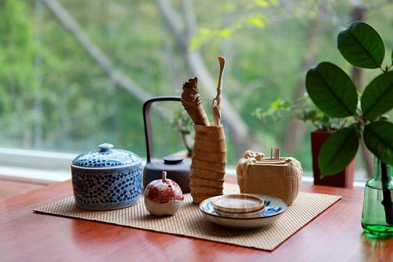
下午偶尔露面的阳光斜射在仿清代的木桌上，那张竹垫子不是MUJI产品，而是在苏州淘到的宝贝，它那么不起眼，却衬托出茶具们的美。
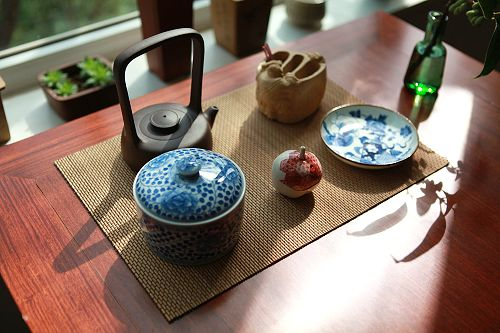
滴水器皿上了半身红色花纹的釉，用手指堵住那个小孔，水自然停止，放开，水会继续流动，即使不用它帮忙磨砚，浇灌盆景，只是凝视、把握在手也满足。
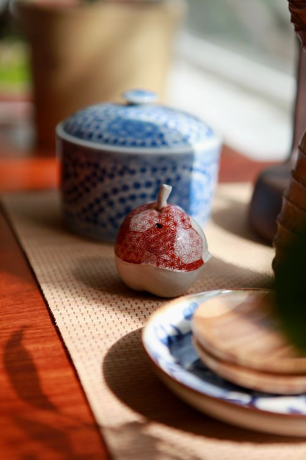
整面墙的上半部分全是没有窗棱的玻璃窗，外面是郁郁葱葱紫金山景色，坐在屋内可观变化着的四季，仿佛看宽银幕电影。不多时槐花就要盛开，空气中会流动着槐花的芬芳，比香水更加自然香甜。
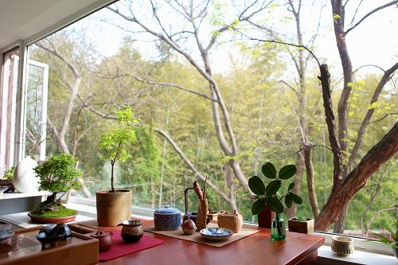
据说此为珍贵植物，具体叫啥没记住，叶片后面长着淡绿色的小果实，两头尖中间饱。
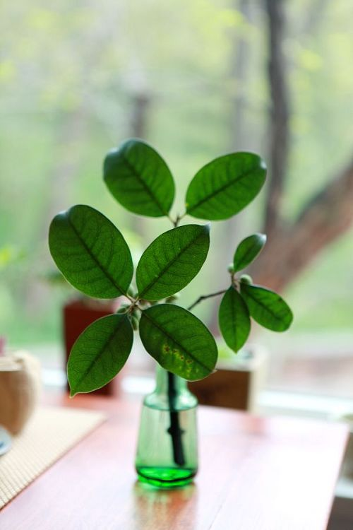
就着竹子的根部雕刻的人像，用来挖茶叶的勺子，不知道雕刻的老师傅有没有培养接班人？
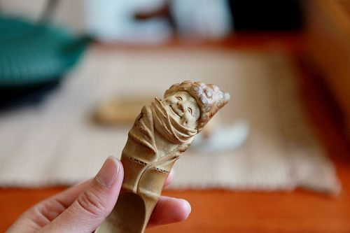
整栋楼楼顶有个大露台，地面铺着木条板，风吹日晒后班驳的效果更加有些古朴的意境。那些绿色的缸在景德镇定做运回南京，用来养睡莲与荷花。我很想在这个大露台上打几个滚儿。
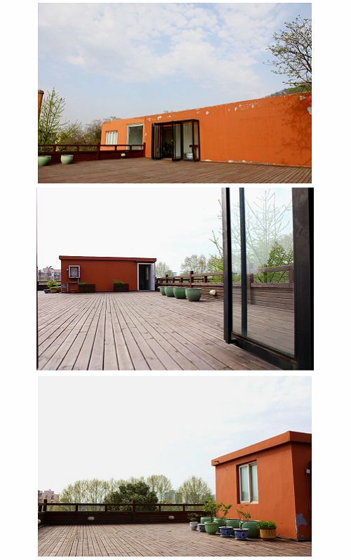
有情趣的人会让随手拣来的枯树枝，配上本白色陶质花瓶而具有观赏性。
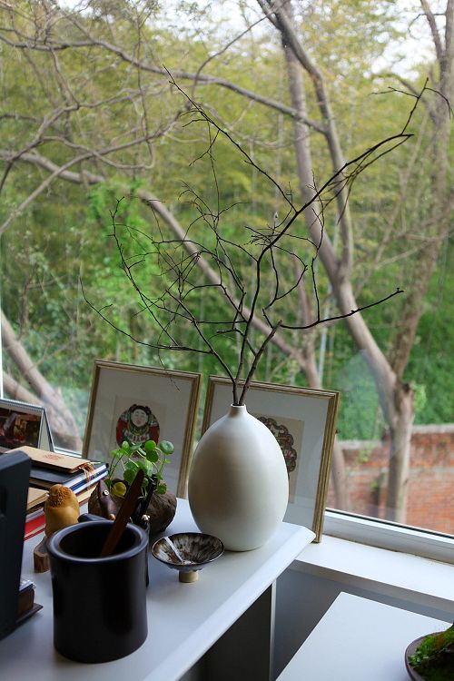
植物与宠物也有命运吧？跟了不同的主人，各自有着不同的命运。这儿的植物茁壮到令人惊讶，即使小小的一株也用精致的器皿捧着，植物不同培养方式会有区别，多种植物同时被呵护得如此生命旺盛......先让我掩面为我家的植物难过一会儿...
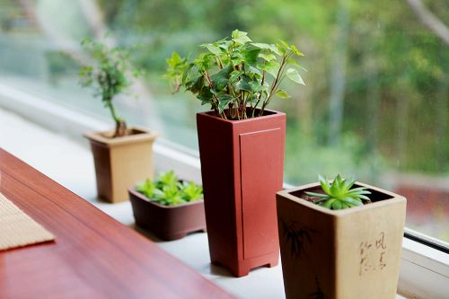
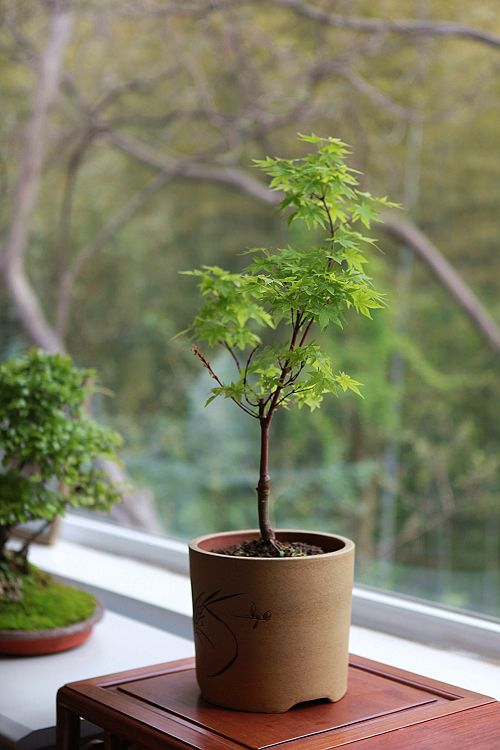
小小的还未舒展开的荷叶冒出水面，那么小又那么坚韧。
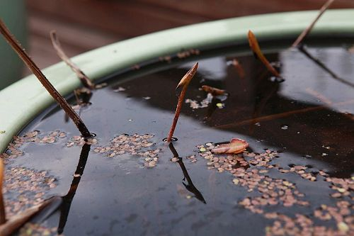
睡莲花朵般的叶片安静地躲藏在水缸里面。
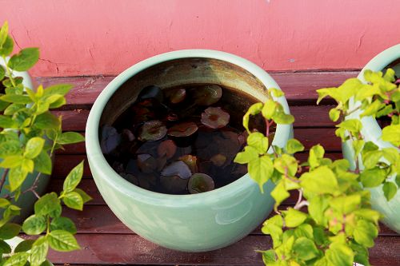
造型浑圆，手感细腻的砚台木盒与眉毛纹石的砚台。
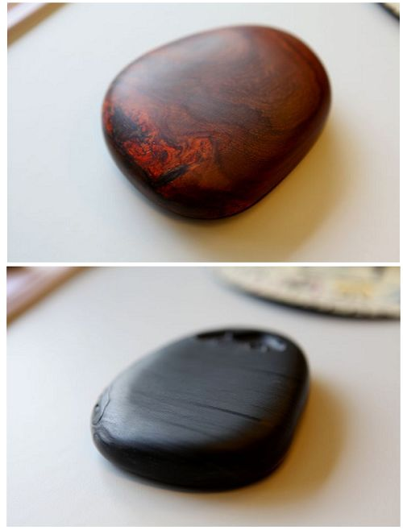
古怪又可爱的老爷爷，他身后的金钱草长势正旺，每一片叶子绿油油的放射着诱人的光芒。以前我在办公室里养过金钱草，他们总是没精打采耷拉着脑袋，叶面上灰蒙蒙的，总之我觉得金钱草比较难伺候，那么见到这样一簇健美的金钱草，我问自己为什么别人能养得那么好捏？
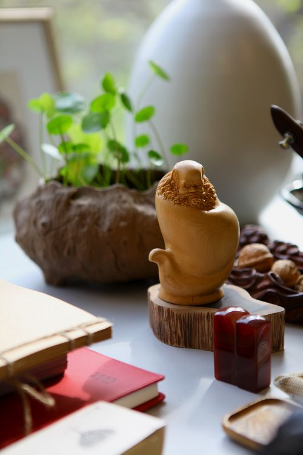
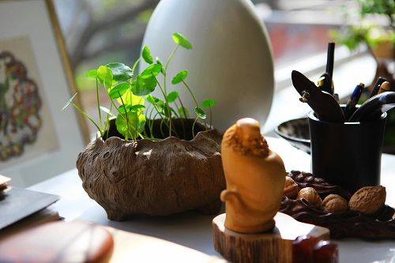
一只变形的陶器里装着一截枯木，枯木上挂着两个金属制作的字“巴森”。
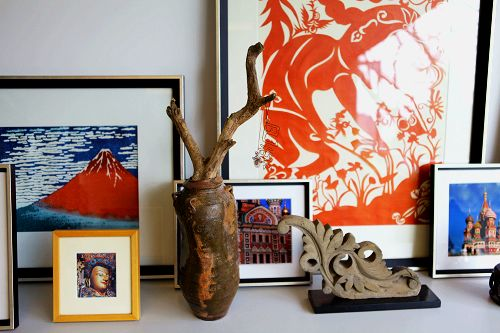
用来喝白开水的杯子美到人心醉。。。想据为己有。
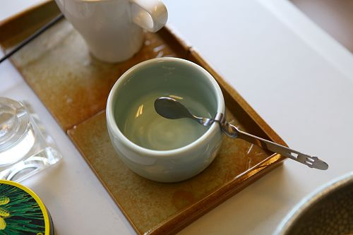
装香料的瓶子。
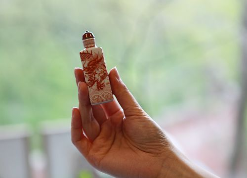
随身携带香料的木质器皿。
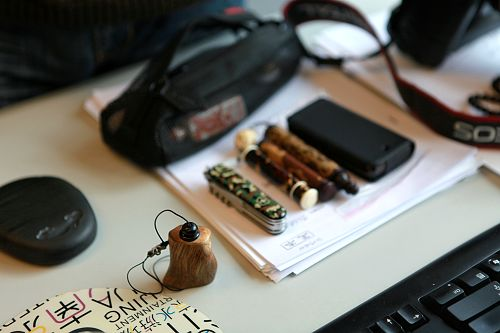
她总是洋溢着甜美的笑容，我总是站没站相。我们站在露台上，紫金山混合着植物气味的空气让人感到愉悦。
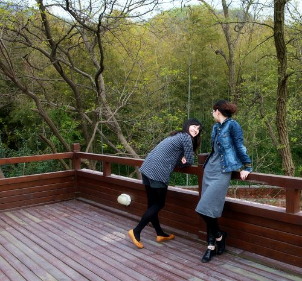
墙壁上婆娑的树影，多么熟悉。
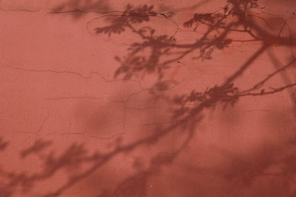
这个下午品尝了多种茶，有：宜红、滇红、普尔、凤凰单枞、铁观音。有位好心的朋友送了我一大罐凤凰单枞，千叮咛万嘱咐“不要空腹喝”，此茶性凉，有些南方人喝此茶把胃喝坏了。我更喜于凤凰单枞泡出来的茶香多于它的口感。好吧，喝茶达人居然也不知道福建三大功夫茶之一的坦洋功夫茶，先让我小小的虚荣几秒，也要多谢送我坦洋功夫茶的朋友。话说上一周收到两罐西湖龙井，更爱红茶及铁观音类的大叶茶，对绿茶兴趣不大。而多年前在台湾人家里喝的高山乌龙茶让我牵挂至今，一定要找来享用一番。
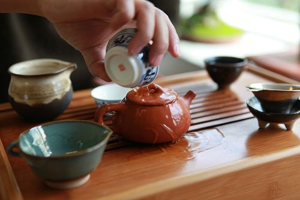
储存宜红、滇红的陶罐，左边这只茶叶罐最难烧制，古时候完全靠经验手工烧制，温度很难控制，有时废几炉才能成功一只。如今电脑控制，但湖蓝色与红色部分是两个温度下形成，所以还是有一定难度的。
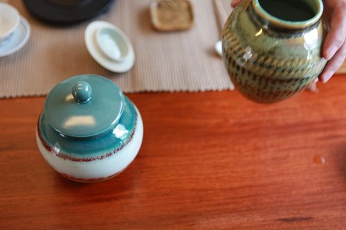
我国三大红茶“宜红、滇红、祁红”，“祁红”未品尝过，“祁红”也是世界三大红茶之一，产于中国安徽省西南部黄山支脉区的祁门县一带。当地的茶树品种高产质优，植于肥沃的红黄土壤中，而且气候温和、雨水充足、日照适度，所以生叶柔嫩且内含水溶性物质丰富，又以8月份所采收的品质最佳。清饮最能品味祁红的隽永香气，即使添加鲜奶亦不失其香醇。春天饮红茶以它最宜，下午茶、睡前茶也很合适。
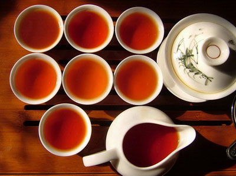
（此图片来自SINA）